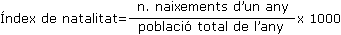

1) És de 3,4 fills per cada dona.
2) És el nombre de naixements per cada mil habitants i serveix per a estudiar la natalitat d'una comunitat determinada.
3)

4) Fecunditat natural = n. fills d'una dona durant la seva fertilitat – factors limitatius.
5) Relació entre n. de naixements i el total de dones fèrtils (15-45 anys).
6)
- Índex de natalitat. Com s'obté.
- Fecunditat natural.
- Nivell de reproducció.
- Fecunditat mitjana mundial = 3,4 fills per dona.